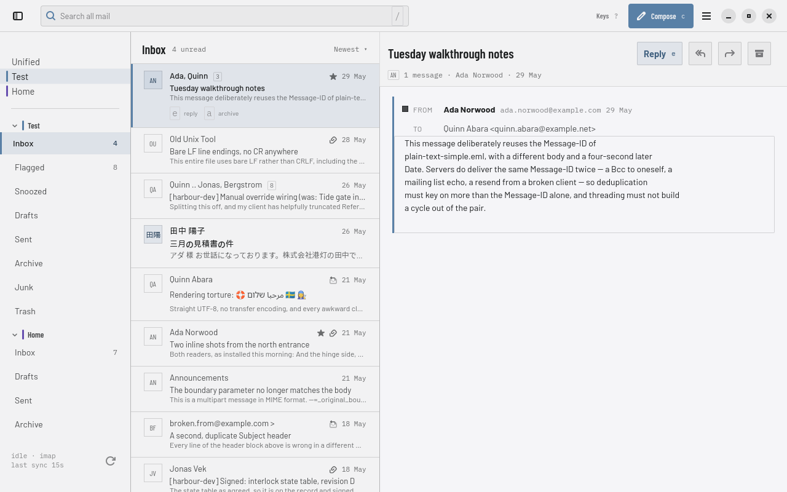
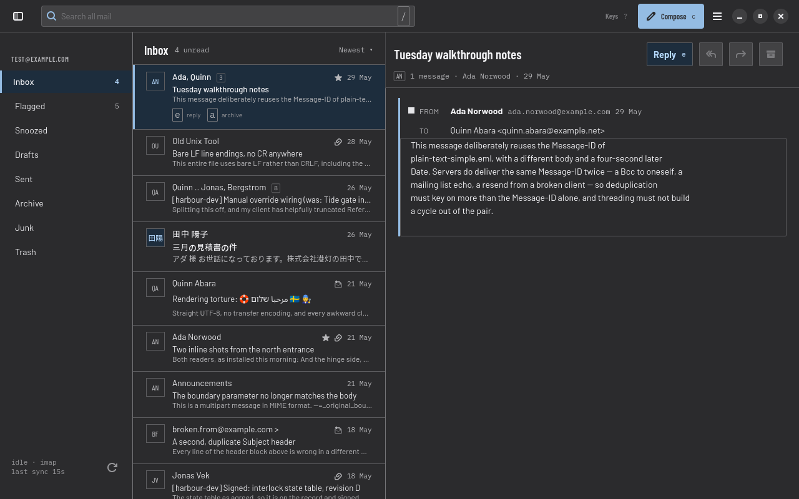

Search is how you move, not a box in the corner
Type a query and the results narrow as you go, with the scopes
and refinements that still match beside them. Operators compose —
from:, in:, has:attach,
is:unread, after:, larger:,
account: — and a leading - negates. The
preview shows the match highlighted before you open it, and
Ctrl+S pins the search to the sidebar as a folder.

Built for triage, not just for reading one message at a time
Select a run of messages with x, Shift, or the mouse
and the list header itself becomes the action bar — archive,
delete, move, each with its own key hint. Selection and cursor
are two different things on purpose: the cursor is where the
keyboard is, the selection is what an action would hit, and
Postio never confuses the two. A burst of actions is one
u to undo.

Writing never makes you lose your place
Compose takes over the reading pane rather than opening a
separate window — the message list keeps its scroll position and
selection right where you left them. Reply with the original
folded under your text, write rich text with the usual keys,
attach a file, send now or schedule it, and Esc
puts you back exactly where you were without discarding a word.

All your accounts, one inbox
Add as many IMAP, Gmail or JMAP accounts as you have. Each is synced by its own engine, and the unified inbox groups their threads together at read time — a slow or unreachable server never holds the others back, and search says so rather than leaving a gap. Sign in with a password, an app-specific password, or OAuth 2 through your browser.

A real desktop application, in light and dark
GTK4 and libadwaita, following your desktop's theme, text scaling and reduced-motion settings. Three row densities, a sidebar that folds away, notifications for the folders you choose, and transitions of a hundred milliseconds or none at all.
